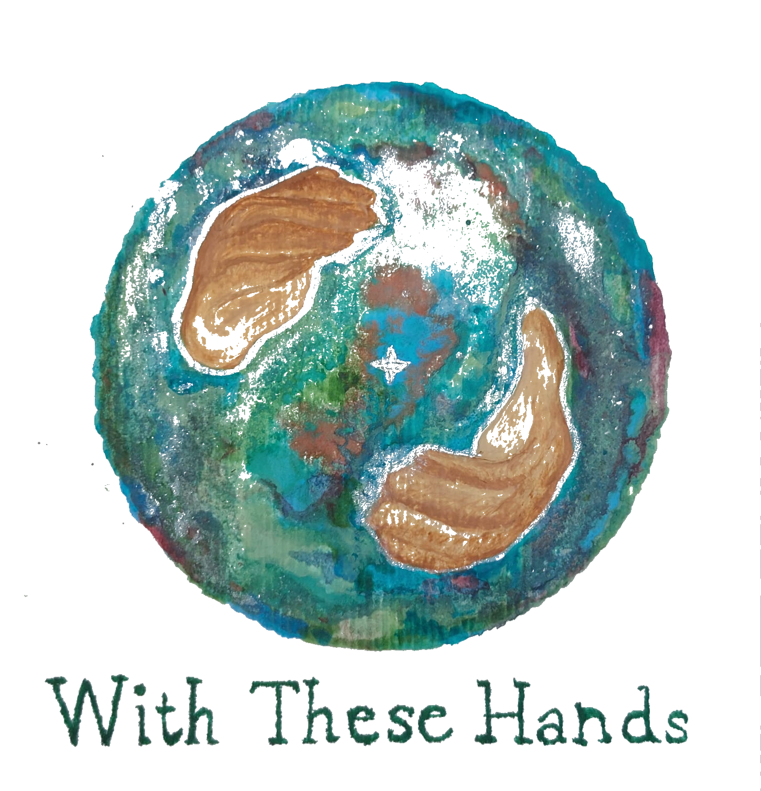

60 minutes
£60 - £80

Gentle Holistic Fascia Release for deep, lasting ease.
Massage therapy

.jpeg)
Hi, I'm Megan.
I am a Holistic Fascia Release and mental health practitioner, Occupational Therapist, and yoga teacher based in Brighton.
My work weaves together clinical understanding with a deeply intuitive, heart-led approach. With a background as a mental health practitioner in NHS services, I have supported individuals across trauma, depression, anxiety, psychosis, and schizophrenia, and I have also worked within specialist neurodiverse services supporting children and young people with sensory and developmental needs.
Alongside my clinical experience, I bring a lifelong passion for holistic wellbeing, movement, and the subtle connection between body, mind, and spirit. Deeply inspired by nature, I draw on its rhythms of holding, releasing, and renewal to help you find your way back to balance in your own time.
My work is rooted in the belief that the body holds its own wisdom, and that with the right support, it can gently guide us back towards a sense of wholeness. Known for my warm, calming presence, I create a space where people feel safe to slow down, soften, and reconnect.
My approach is trauma-informed, compassionate, and responsive to what is present in the moment. Sessions are guided not by routine but by your body, creating a deeply personal and restorative experience that supports ease, grounding, and reconnection.
.jpeg)
.jpeg)
A gentle yet powerful bodywork approach guided by your body's own intelligence.
Holistic Fascia Release is a gentle yet powerful hands-on treatment that works with the fascia - the connective tissue that weaves through and supports every part of the body.
Rather than focusing on isolated areas of tension, this approach recognises the body as an interconnected whole. Patterns of holding can develop over time through injury, stress, posture, or emotional experience, often showing up in places that may seem unrelated.
Through slow, intuitive, and deeply attentive touch, I listen to the body and work with its natural rhythms to support the release of these patterns. This allows space for the body to reorganise, unwind, and return towards a state of greater ease and balance.
This work is not a quick fix, but a gradual and often profound journey of reconnection. Each session builds gently on the last, allowing changes to unfold in a way that feels safe, sustainable, and deeply integrated.
Sessions are unique and responsive to what is present in the moment. This work may support persistent pain, movement restrictions, nervous system overwhelm, emotional holding, and a deeper sense of grounding and ease.
Holistic Fascia Release is not about fixing, but about creating the conditions for change. Those drawn to reconnect through body, breath, and presence are warmly welcomed.

Sliding-scale pricing helps make sessions accessible based on your circumstances.
£60 - £80
£80 - £100
Phone 07958 164461
Email megsml@hotmail.com
Location Brighton (office/studio location)
Hours & notes Mon-Fri 8-6